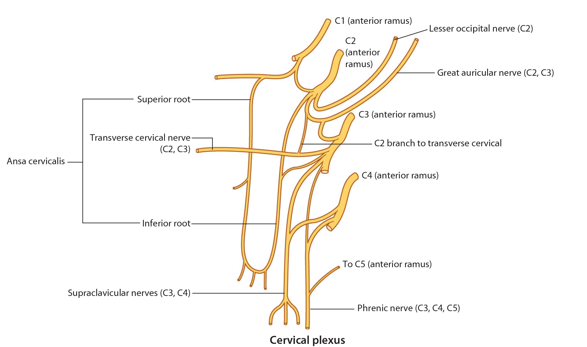

Lab 1 Module 3: Posterior Triangle of the Neck - Page 4 of 5
Nerves of the Posterior Triangle
|  |
| Tap on image to enlarge |
| The Cervical Plexus is a network of nerves formed by communications between the ventral rami of the first four cervical nerves (C1-C4). It has a sensory portion and a motor portion. The motor portion innervates muscles in the anterior triangle of the neck. The sensory portion emerges from deep to sternocleidomastoid, pierces the deep fascia and divides into four main sensory nerves: |